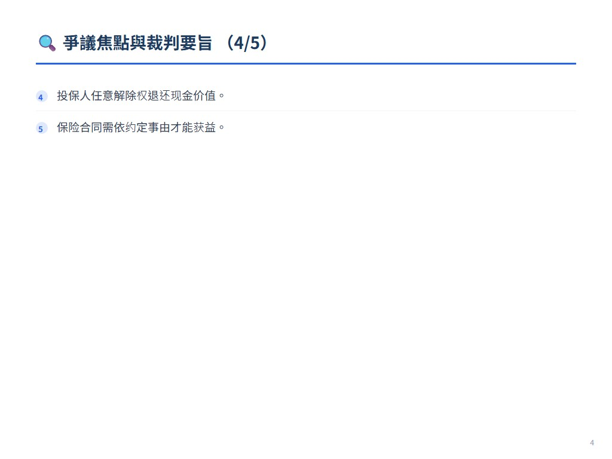
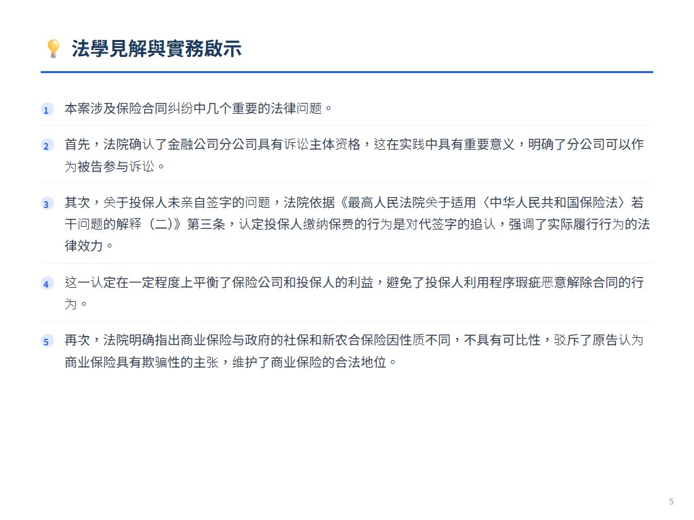
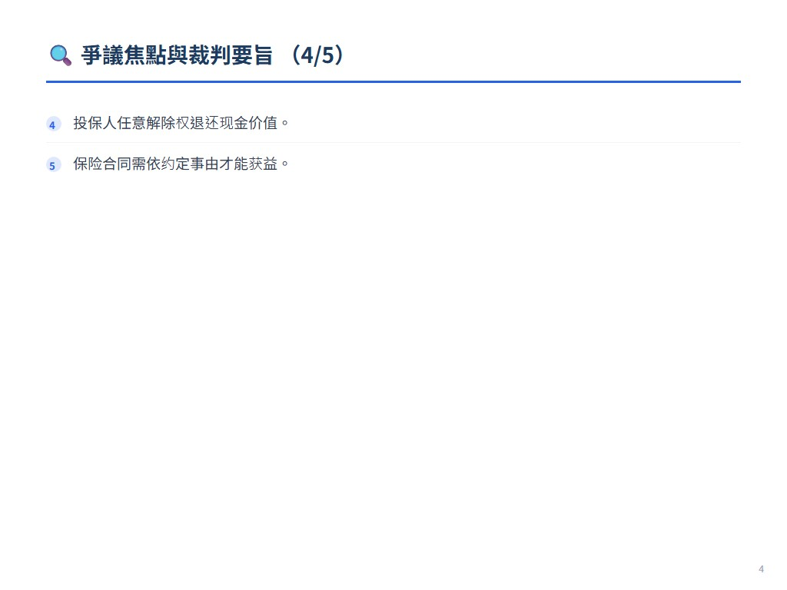
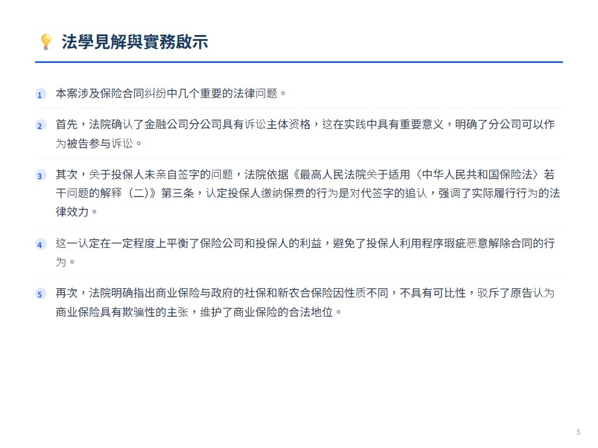

摘要
原告陈金福向泰康人寿四川分公司投保商业保险后，认为保险存在欺骗并要求解除合同，退还保费。法院判决解除合同，但仅退还保单的现金价值，驳回原告其他诉讼请求，认定投保人交费视为对代签行为的追认。
爭議焦點與裁判要旨
- 金融公司分公司具诉讼主体资格。
- 投保人交费视为对代签字的认可。
- 商业保险与政府保险不具可比性。
- 投保人任意解除权退还现金价值。
- 保险合同需依约定事由才能获益。
法學見解
本案涉及保险合同纠纷中几个重要的法律问题。首先，法院确认了金融公司分公司具有诉讼主体资格，这在实践中具有重要意义，明确了分公司可以作为被告参与诉讼。其次，关于投保人未亲自签字的问题，法院依据《最高人民法院关于适用〈中华人民共和国保险法〉若干问题的解释（二）》第三条，认定投保人缴纳保费的行为是对代签字的追认，强调了实际履行行为的法律效力。这一认定在一定程度上平衡了保险公司和投保人的利益，避免了投保人利用程序瑕疵恶意解除合同的行为。再次，法院明确指出商业保险与政府的社保和新农合保险因性质不同，不具有可比性，驳斥了原告认为商业保险具有欺骗性的主张，维护了商业保险的合法地位。最后，法院强调投保人行使任意解除权时，只能获得保单的现金价值，而非已交保费，这警示投保人应谨慎行使解除权，避免不必要的经济损失。本案判决对于规范保险销售行为、保护保险消费者权益、以及维护保险市场的稳定具有一定的指导意义。

 




展開案例評析
金融公司的分公司具有诉讼主体资格，投保人交费视为对代
來源：《中國法院2018年度案例》保險糾紛 原始文件：中国法院2018年度案例·保险纠纷.pdf 案號：四川省蓬安县人民法院（2015）蓬民初字第1915号民事判决书 案由：保险合同纠纷 當事人：陈金福诉泰康人寿保险股份有限公司四川分公司保险合同案
61.金融公司的分公司具有诉讼主体资格，投保人交费视为对代 签字的认可，投保人任意解除权商业保险不宜认定诈骗 ——陈金福诉泰康人寿保险股份有限公司四川分公司保险合同案
【案件基本信息】
1.裁判书字号 四川省蓬安县人民法院（2015）蓬民初字第1915号民事判决书 2.案由：保险合同纠纷 3.当事人 原告：陈金福 被告：泰康人寿保险股份有限公司四川分公司
【基本案情】
2013年2月5日，原告向被告泰康人寿保险股份有限公司四川分公司投保了编号为 36738448号的保险，含主险《泰康财富人生D款终身年金保险（分红型）》、附加险《泰 康附加财富赢家定期寿险（万能型）》。投保后，原告将该商业保险与政府的社保及新农 合保险相比，认为该商业保险存在交费基数大、时间长，且保障小的特点，因此认为该商 业保险无保险利益，且当初投保人并未亲自签字，存在保险诈骗，要求解除合同，并赔偿 各种损失。
【案件焦点】
1.投保人通过保险代理人（经纪人）在保险合同上签字，是否对投保人产 生法律效力？2.商业保险是否能与政府保险进行比对，因此确认其欺骗性？3. 投保人的任意解除权是否可以随时行使？保险合同解除后退还的是保费还是 现金价值？
【法院裁判要旨】
四川省蓬安县人民法院经审理认为：公民之间合法的民事活动应当诚实 守信。本案中，原告在被告保险公司投保的主险（编号：36738448）《泰康 财富人生D款终身年金保险（分红型）》、附加险《泰康附加财富赢家定期寿 险（万能型）》和（编号：36737271）《泰康如意通意外保证计划》人寿保 险，两份保险系双方当事人真实意思表示，且不违反法律强制性规定，合法 有效。根据《中华人民共和国保险法》第十五条之规定，可以确认投保人具 有任意解除权。至于原告要求退还已交的保费，根据保险合同约定及《中华 人民共和国保险法》第四十七条之规定，合同解除后被告保险公司应当支付 的是保险合同的现金价值。原告陈述其购买的人寿保险均无保险利益，可以 确认保险合同中对被告应当承担的责任，即原告所谓的保险利益有明确的表 述，明显不符合客观事实。而红利根据合同约定，其产生应根据保险公司的 经营状况而定，并不必然产生。同时，原告将政府的社保和新农合保险与本 案的商业保险进行比较，因政府的保险具有公益性、保障性，而本案的保险 具有商业性、营利性，显然不具有可比性。而对于原告诉称，其没有得到保 险合同，《泰康如意通意外保障计划》的代理人唐某某其不认识，保险的风 险提示告知处和投保人签名处的签名不是自己所签，根据《最高人民法院关 于适用〈中华人民共和国保险法〉若干问题的解释（二）》第三条规定：“投 保人或者投保人的代理人订立保险合同时没有亲自签字或者盖章，而由保险 人或者保险人的代理人代为签字或者盖章的，对投保人不生效。但投保人已 经交纳保险费的，视为其对代签字或者盖章行为的追认。保险人或者保险人 的代理人代为填写保险单证后经投保人签字或者盖章确认的，代为填写的内 容视为投保人的真实意思表示。但有证据证明保险人或者保险人的代理人存 在保险法第一百一十六条、第一百三十一条相关规定情形的除外。”虽然原告 对涉案保险的签名不予认可，但其并未申请鉴定，即使原告没有亲自签名或 者盖章，但其已经交纳了两年保费，也应当视为其对代签字或者盖章行为的 追认。原告也未举证证明保险公司及其工作人员有《中华人民共和国保险 法》第一百一十六条、第一百三十一条规定相关的情形，因此原告的诉称不 符合法律规定，本院不予支持。四川省蓬安县人民法院依照《中华人民共和
国保险法》第十五条、第四十七条，《最高人民法院关于适用〈中华人民共 和国保险法〉若干问题的解释（二）》第三条之规定，作出如下判决： 一、解除原告陈金福与被告泰康人寿保险股份有限公司四川分公司签订 的编号为36738448的主险《泰康财富人生D款终身年金保险（分红型）》、附 加险《泰康附加财富赢家定期寿险（万能型）》。 二、被告泰康人寿保险股份有限公司四川分公司退还原告陈金福编号为 36738448的保险现金价值人民币4835.00元。 三、驳回原告陈金福的其他诉讼请求。
【法官后语】
现实生活中，农民群众仍然存在文化程度较低的普遍情况，其了解或认识保险都是通 过保险公司的业务员，即保险经纪人的宣传，面对动辄几十页的保险合同，投保人或者被 保险人很难仔细完成阅读，此时业务员的讲解便成为快速高效的知识灌输，很多投保人仅 仅知道自己怎么交费，什么时候可以领取保险金，部分农村居民甚至存在书写困难，此时 就自然而然出现了保险经纪人代签字的行为，也就涉及代签字的法律效力问题。根据法律 及相关部门规章的规定，投保人的代理人代签字的对投保人不生效，但投保人已经交纳保 险费的，视为其对代签字或者盖章行为的追认。保险人或者保险人的代理人代为填写保险 单证后经投保人签字或者盖章确认的，代为填写的内容视为投保人的真实意思表示。因 此，当投保人按照保险合同的约定交纳保险费后，再以自己未亲自签字为由要求解除保险 合同是不能得到支持的。 关于投保人陈述商业保险涉嫌欺骗，其实这是毫无道理的。目前国家也正在加大力度 发展保险事业，商业保险是不可或缺的一部分。当然，目前的商业保险营销模式来自发达 地区，主要是利用亲戚、老乡等具有一定人身关系进行宣传，进而达到销售的目的。这种 宣传主要是靠保险公司业务员，而少部分业务人员为了追求业绩，在宣传过程中夸大了保 险的功能，却回避了保险区别于存款不能随时支取的本身属性，甚至进行虚假宣传。但总 体来说人寿保险本身是兼具储蓄和人身风险保障的双重功能，唯一的要求是要出现保险合 同约定的事由后才能享受保险利益，比如出现重大疾病或者被保险人死亡等才能获得保险
赔偿金，除此外投保人不能获得保险利益，因此保险本身不涉嫌欺骗。 投保人应当谨慎行使保险合同任意解除权，否则将会造成较大的损失。目前法律虽然 规定了投保人享有保险合同的任意解除权，但从维护合同的稳定性出发，不支持合同无法 定或者约定理由解除。同时，保险人为了规避或者降低风险，在保险合同明确约定了投保 解除合同是保险人只退回保险的现金价值，而这个所谓的保险现金价值是经过险种的设计 师也就是俗称精算师通过对不同险种的交付基数、交费年限、交付费率、交费时保险人的 风险等综合计算后而得出的函数，此时代表的是保险人的利益，降低保险人的损失，而真 正损失的是投保人。因此，当投保人无理由解除合同时，法院支持的是退还合同解除时的 现金价值，而不是退还已交的保费。 编写人：四川省蓬安县人民法院 魏茏沣